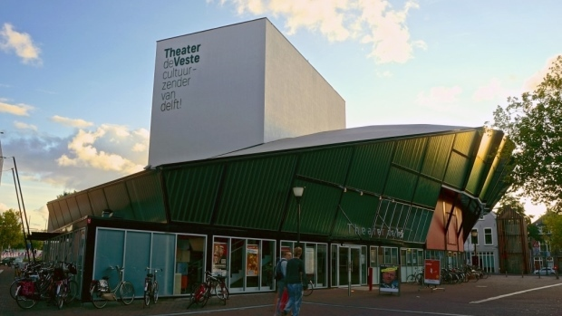

<link rel="import" href="./symposium-page-card.html">

<dom-module id="symposium-location">
  <template>
    <style>
    :host {
      display: block;
    }

    h1 {
      margin-top: 0;
    }

    img {
      margin: 32px 0 0;
      display: block;
      margin: auto;
      max-width: 100%;
    }
    </style>

    <symposium-page-card>
        <h1>Location</h1>

        <p>The symposium will take place in Theater de Veste, which is located at the center of Delft. It is easily accessible by public transport, car and bike. It is a five-minute walk from Delft Central Station. There is a bus stop called "Zuidpoort" near the entrance, you can get there by taking bus 60, 62, 69, 80, 81 or 121. </p>

        <p>The parking facility "Zuidpoort" is right next to the theatre. Please follow the signs to "Parking Zuidpoort". </p>

        <p>For more information on the location see: <a href="http://www.theaterdeveste.nl">www.theaterdeveste.nl</a>.</p>

        <p>
          <b>Theater de Veste</b><br>
          <i>Vesteplein 1<br>
          Delft</i>
        </p>

        </img>

    </symposium-page-card>

  </template>
  <script>
    Polymer({
      is: 'symposium-location',

      properties: {
      },
    });
  </script>
</dom-module>
